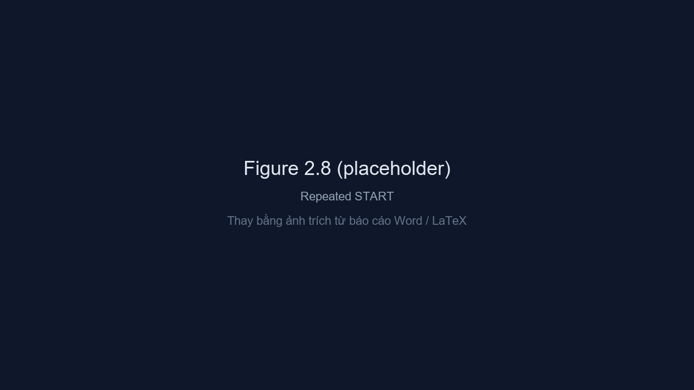

<div class="slide slide-container i2c-slide">
    <h1 class="gradient-text">Fig08 — Repeated START</h1>
    <div class="i2c-fig">
        
        <p class="i2c-fig-caption">Hai <strong>START</strong> liên tiếp không <strong>STOP</strong> giữa chừng — đối chiếu kịch bản TB repeated START.</p>
    </div>
</div>
